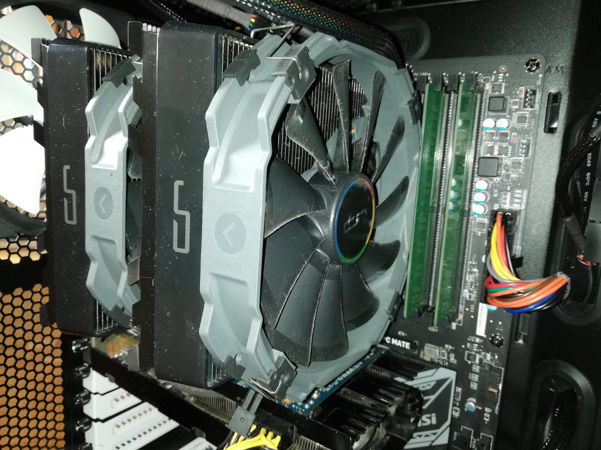

挨拶
私の名前はパン太である。名前はご覧の通りある。
パン太は可愛いのである・・
君はなにか僕に御用があるのかい？
ご飯は何を食べたかって？
「ぬおおおおおおおおおお！！！そんなことに僕の時間をっ！！」
許さん！許さん！許さんからなッ！！！！！！
JavaScriptを使って電卓を作ってみたのでぜひとも見てほしい
なお技術力不足により数値を動的に評樹することができない。
と、ここで昔話を一つやってみる。
昔々あるところにおじいさんとおばあさんが暮らしていました。
おじいさんは芝刈りに、おばあさんは川へ洗濯に行きました
そうすると川上から大きなパンがどんぶらこ～どんぶらこ～と
流れてきました。
わたし・の趣味
わたくしの♡趣味というより好きなことは自作PCとプログラミングですかね・・
しかしながら自作PCはお金がないのでほとんど取り組めていないのです
プログラミングもつい最近始めたことなのでいつまで続くやら・・
以下の画像はわたくし♡のPCである。運用してしばらく立っているので
若干ホコリが付着している。
